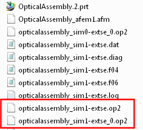

Browse the output files
 Simulation Navigator
Simulation Navigator
-
 extse
extse -
 Browse
Browse -

-
opticalassembly_sim1_extse.op2 contains the results from the normal modes solution. You can post-process these results to verify your FE model.
opticalassembly_sim1-extse_0.op2 is the external superelement. You can use this in an assembly FEM to define a system model. You will use this superelement in a later activity.
-
 the operating system file browser window
the operating system file browser window